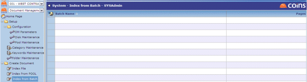

Indexing Scanned Images
Index from Pool and Index from Batch allow you to index documents that have been scanned.
- Index from Pool will allow you to auto index process all scanned images in a pool.
- Index from Batch will present a list of all scanned batches to allow auto indexing by individual scanned batch.

The scanned document images are displayed in a separate window, allowing you to enter the indexing details in the window. If you have two monitors, you can display the document image on one and the input screen on the other.

When you save the indexing details for one document, you move on to index the next document, and automatically displays the corresponding image in the image window. You can also use the navigation buttons (


 ) to move on without indexing a document.
) to move on without indexing a document.
There is additional functionality for Auto Indexing PL Invoices.
To index scanned documents:
- Go to Index from Pool or Index from Batch.
- Click the link for the pool or batch you want to index.
- Select the folder where you want to store the indexed documents.
- Click the link for the document category to index.
opens the first image in a new window.
- Enter a description and the index keywords for the document.
- Click
 .
displays the next document image and prompts for the index details.
.
displays the next document image and prompts for the index details.
- Continue entering indexing details for each document in the pool or batch.
returns you to the list of remaining pools or batches. If you have indexed all the documents in the pool or batch, it disappears from the list.